Training & Background
What really matters
Formal study provides the tools to hold this work safely. Readiness is what makes change possible.
The Path
The path began in June 2016 and has continued through formal study, supervised practice and lived application.
- 3,000+
- Hours across study, workshops, retreats and assisting
- 200+
- Immersions across trainings, seminars, resits and other intensive formats
- 1,000+
- People supported
Certified Qualifications
Craniosacral Therapy (CST)
- Pathway
- Nine five-day modules, with casework and advanced study.
- About the modality
- A gentle, non-invasive bodywork approach using subtle touch to support relaxation, regulation and the body’s capacity to rebalance.
Holotropic Breathing Technique
- Pathway
- Nine five-day modules, with equal experience as breather and sitter.
- About the modality
- A long-form breathwork process using conscious, connected and intensified breathing, evocative music and supported non-ordinary states for emotional exploration, release and integration.
NLP Practitioner & Breakthrough Coach
- Pathway
- Seven-day qualification immersion, followed by further practice and assisting experience.
- About the modality
- A coaching approach combining Neuro-Linguistic Programming with practical interventions to identify patterns in thought, language and behaviour, reframe meaning and support changes in response and action.
Access Bars Practitioner
- Pathway
- Three certification trainings, with additional immersion in Access Consciousness programmes.
- About the modality
- A gentle light-touch process involving 32 points on the head, used to support relaxation, reduce mental noise and create a greater sense of space and ease.
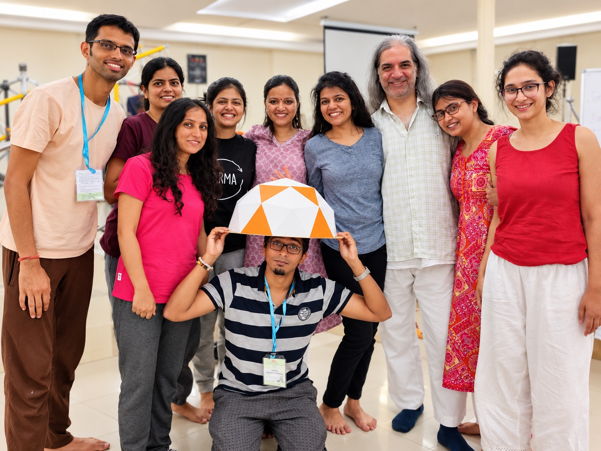
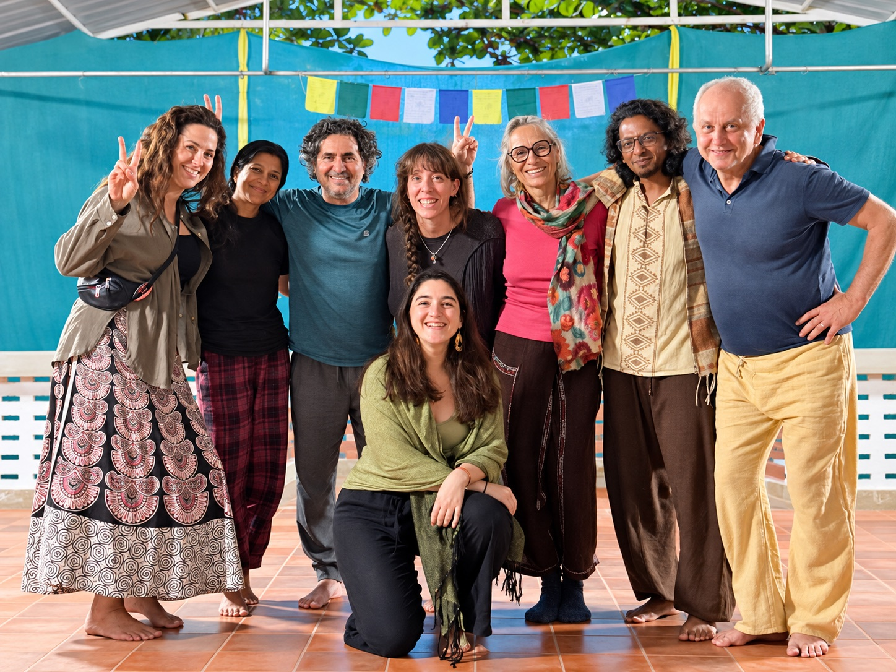
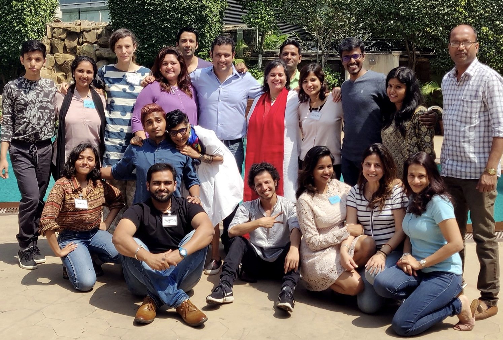
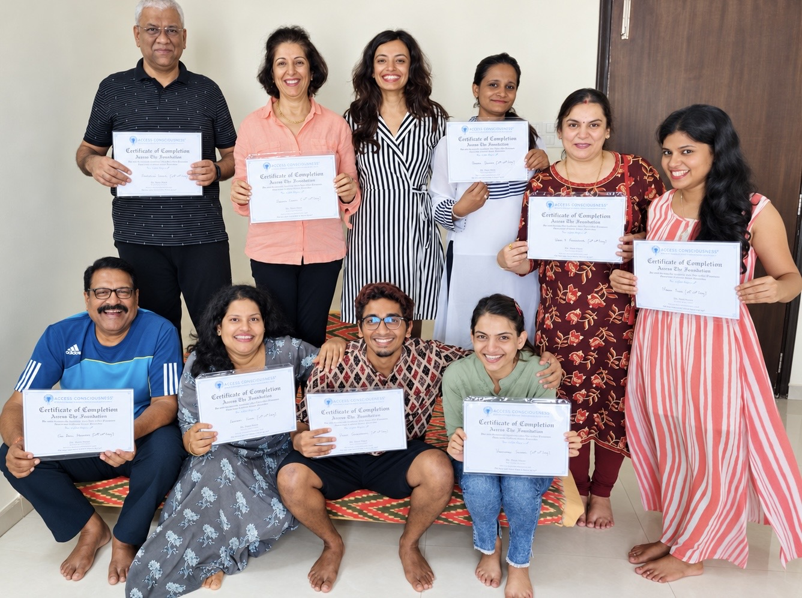
Extensive Practice & Study
These studies have shaped both personal healing and the way this work is held.
The Journey
- Depth of study
- 642 hours across 2017-20. The full pathway was completed twice, with additional assisting experience.
- About the modality
- A guided emotional process for exploring and working through unresolved experiences, patterns and emotional charge.
EFT & Matrix Reimprinting
- Depth of study
- 195+ hours across 2016-20, including advanced levels, repeat study and assisting.
- About the modality
- A tapping-based emotional process combined with guided reflection to work with distressing memories, beliefs and present-day triggers.
Final accreditation for The Journey and EFT required additional case-study documentation, which was not completed and submitted.
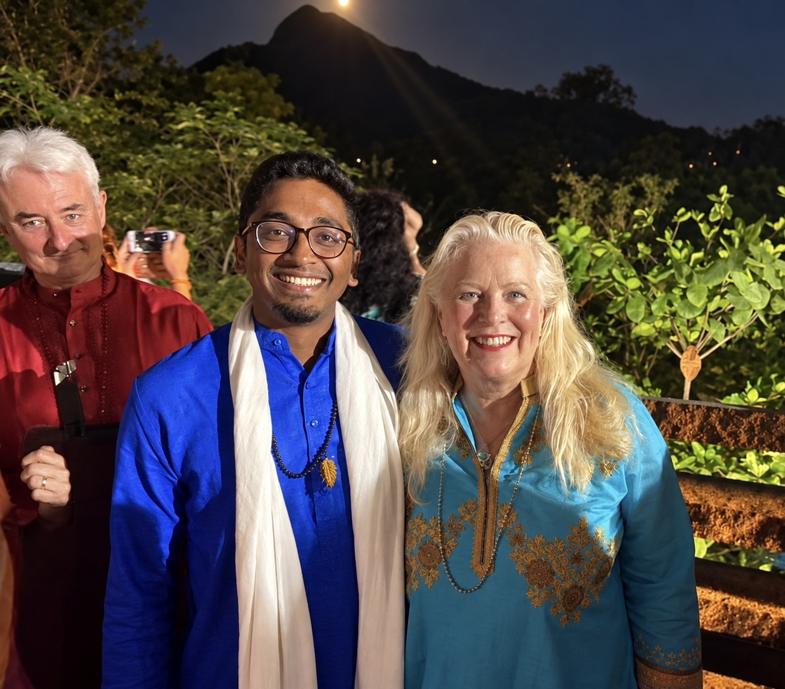
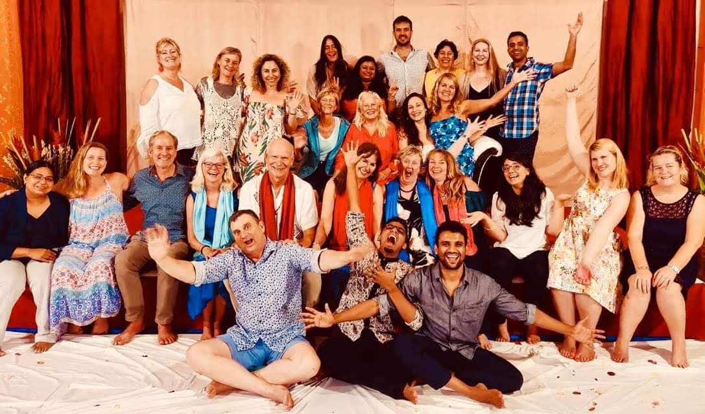
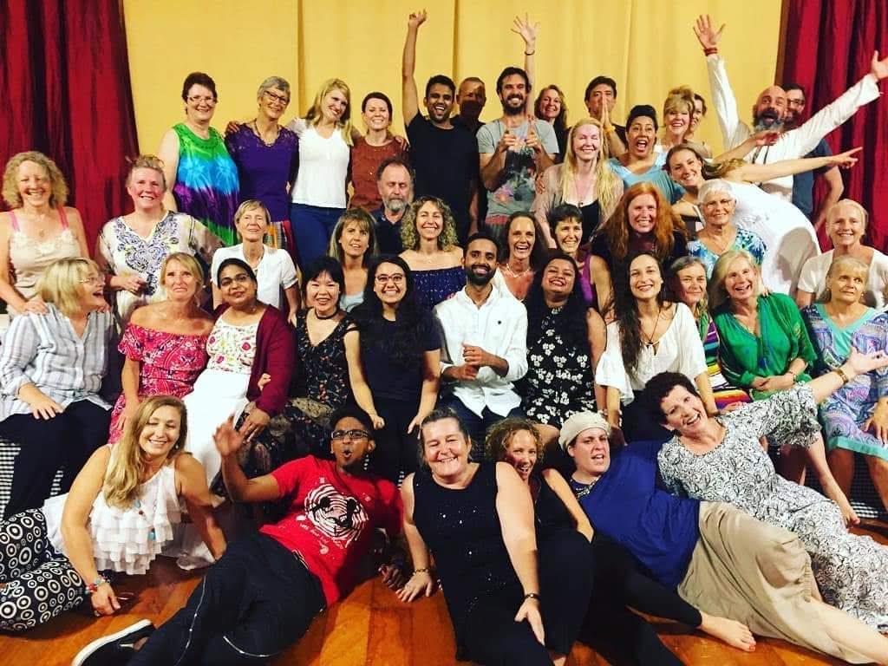
Personal Transformation
Landmark Curriculum
A transformative-learning programme focused on recognising blind spots, examining the structures through which we think and act, and creating greater freedom and effectiveness in areas that matter.
Leadership, Facilitation & Personal Transformation
Immersive programmes in personal transformation, leadership, communication and facilitation, including Unleash the Power Within, Train the Trainer and Making the Stage.
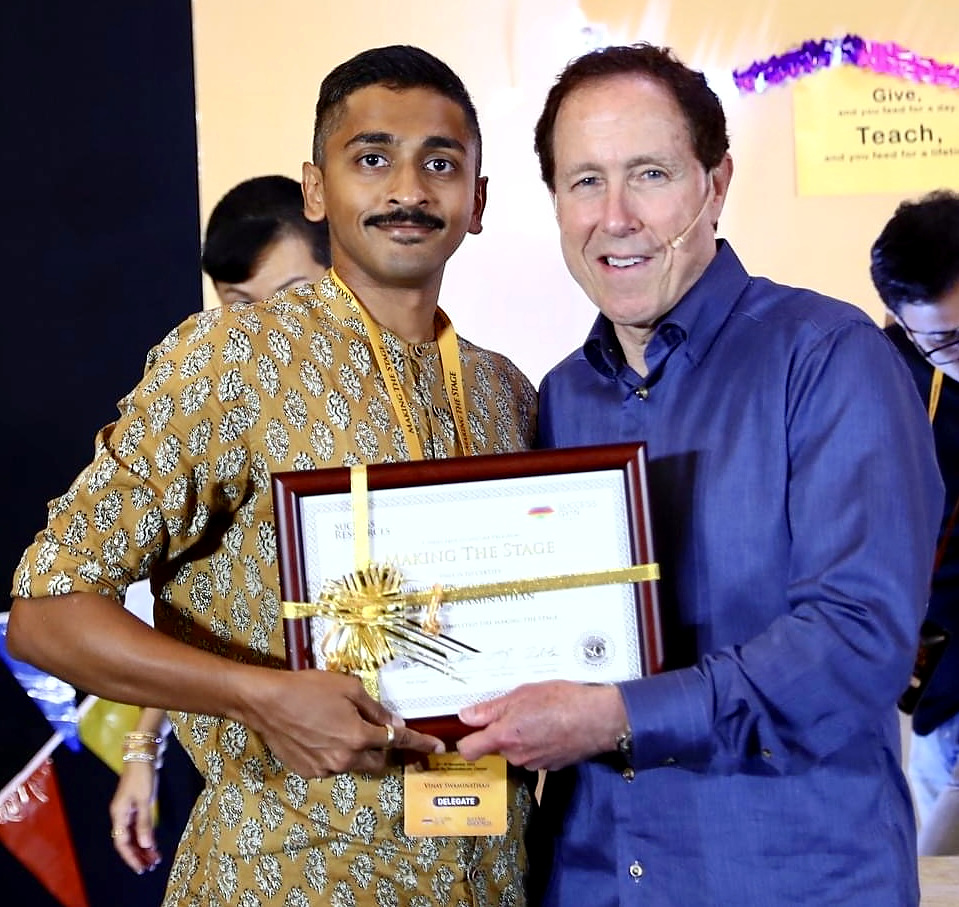
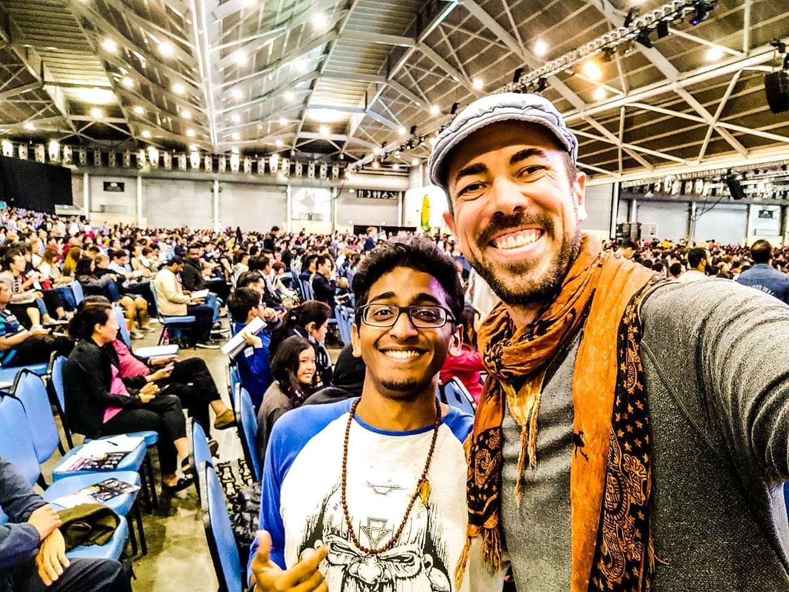
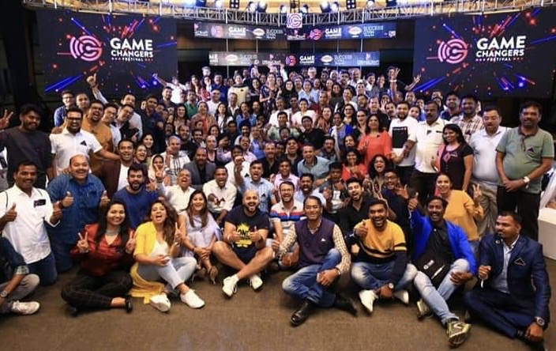
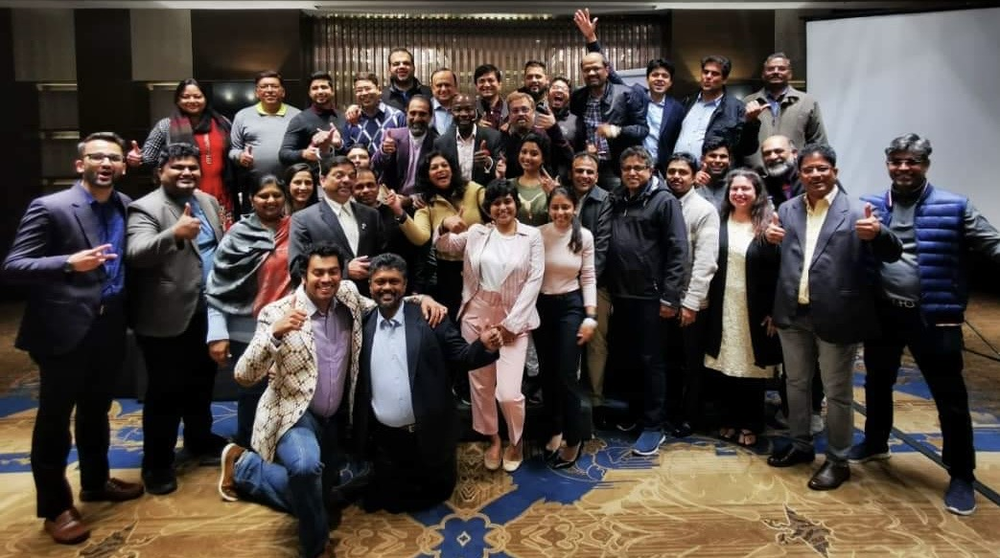
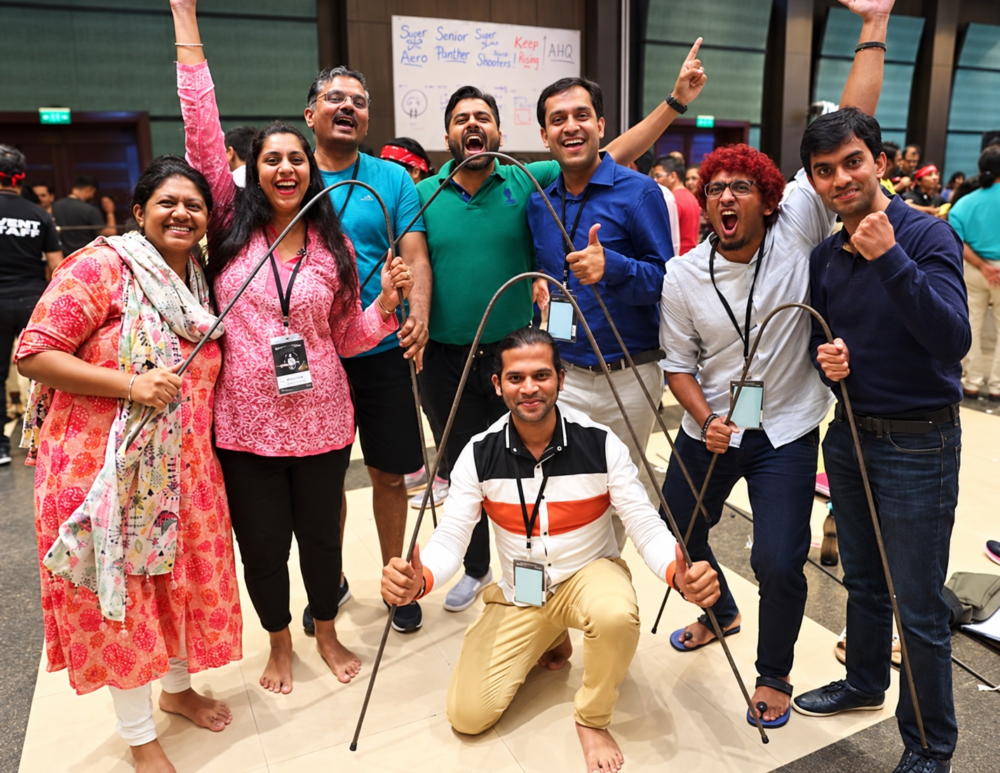
Ongoing Practice
Stillness, Breath & Movement
Personal disciplines that have included meditation, pranayama, silence and Kalaripayattu.
Tools for Self-Knowledge & Inquiry
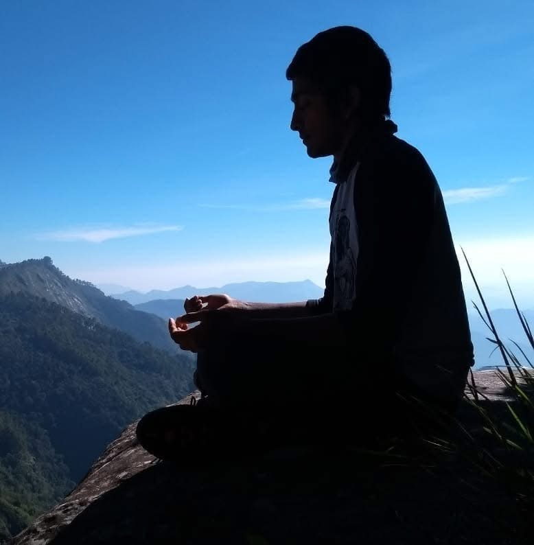
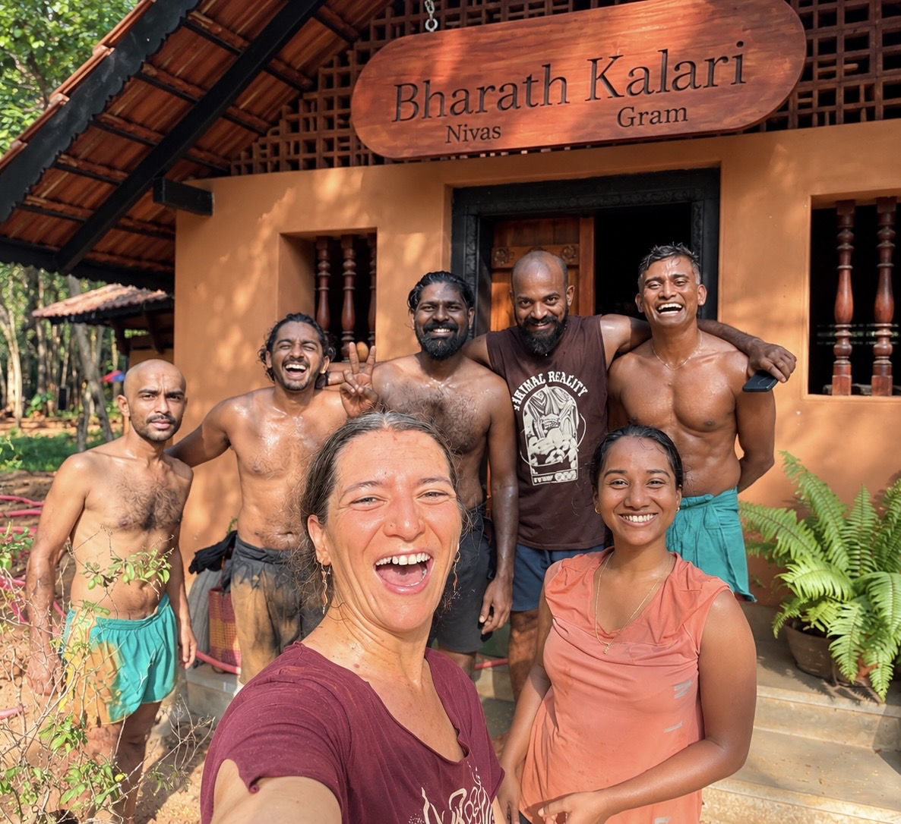